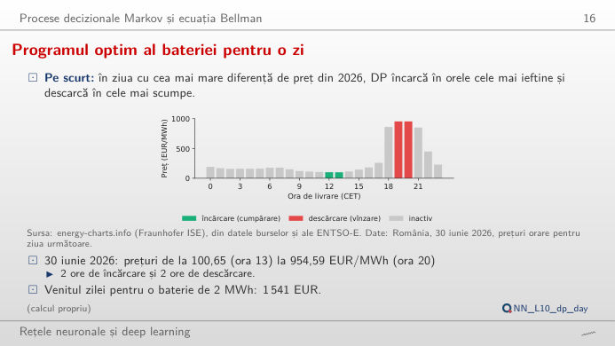
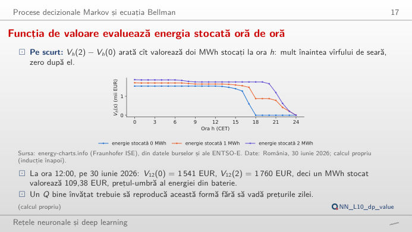
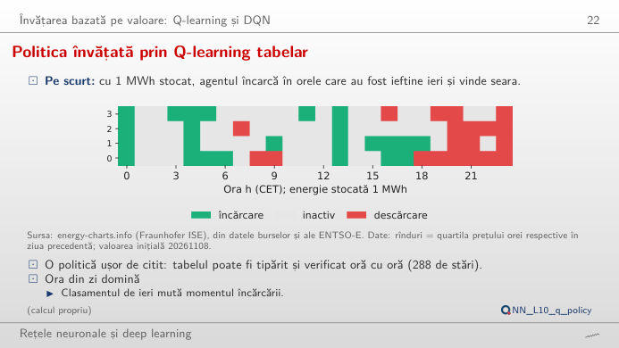
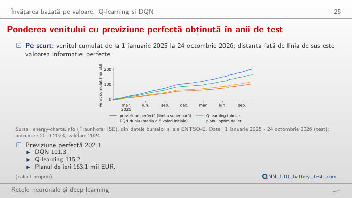
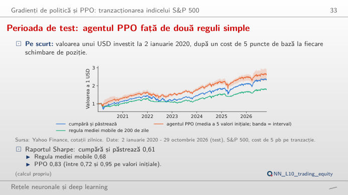
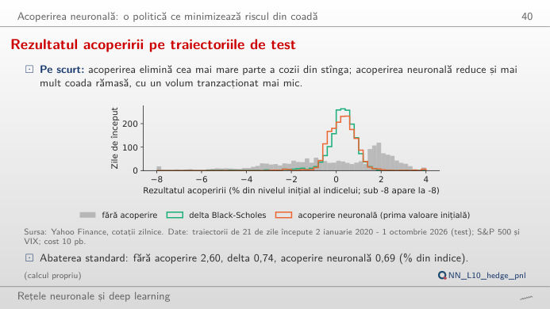

Reinforcement learning (RL) pe trei probleme reale: o baterie de 2 MWh (megawatt-oră) care tranzacționează pe piața pentru ziua următoare, o poziție în indicele S&P 500 care este fie în afara pieței, fie investită, și acoperirea zilnică a unei opțiuni call pe o lună. În stînga este slide-ul din curs, în dreapta aceeași figură, recalculată în browser din datele cursului (data/clean) și din deciziile agenților antrenați cînd modificați un control. Butonul ▶ modifică parametrul principal pas cu pas. Sub fiecare figură: o sinteză numerică, o întrebare pentru sală și Quantlet-ul cu codul figurii.
Bateria ca proces decizional Markov (MDP): programarea dinamică (DP) · Învățarea bazată pe valoare: Q-learning și rețeaua Q profundă (DQN) · Gradienți de politică: optimizarea proximală a politicii (PPO) în tranzacționare · Acoperirea neuronală a unei opțiuni call vîndute
Bateria ca proces decizional Markov (MDP): programarea dinamică (DP)
Programul optim al bateriei pentru o zi

Răspuns
Aproape, dar nu chiar: 2.885 EUR, cu 87% mai mult. Bateria mută 1 MWh pe oră, deci al treilea și al patrulea MWh sînt cumpărate în ore mai puțin ieftine și vîndute în ore mai puțin scumpe; cu 6 MWh venitul este de 3.282 EUR, doar cu 14% peste cel de la 4 MWh, pentru că vîrful de seară durează puține ore. O baterie fără pierderi (randament 100%) ar cîștiga 1.745 EUR la 2 MWh. În aceeași zi, Ungaria dă 1.466 EUR, Germania–Luxemburg 708 EUR și Bulgaria 744 EUR: venitul urmează diferența zilnică dintre prețuri, nu nivelul lor. Toate aceste cifre sînt limite superioare, deoarece programarea dinamică (DP) cunoaște cele 24 de prețuri ale zilei înainte ca ele să fie publicate.
Funcția de valoare evaluează energia stocată oră de oră

Răspuns
La ora 12:00, V12(0) = 1.541 EUR și V12(2) = 1.760 EUR, deci fiecare MWh stocat valorează 109,38 EUR: prețul-umbră al energiei din baterie, aproximativ cît costă cumpărarea ei la amiază. La ora 18:00, fiecare MWh valorează circa 880 EUR, pentru că cele mai scumpe două ore (19:00 și 20:00) urmează. La ora 23:00 (alegeți valoarea unui MWh stocat în plus), primul MWh valorează 211 EUR (mai poate fi vîndut în ultima oră), iar al doilea nimic, deoarece se poate muta doar 1 MWh pe oră. Ecuația Bellman construiește aceste valori înapoi, pornind de la V24(s) = 0, iar acțiunea optimă în fiecare (h, s) este cea care atinge maximul.
Învățarea bazată pe valoare: Q-learning și rețeaua Q profundă (DQN)
Politica învățată prin Q-learning tabelar

Răspuns
Încarcă: Q(încărcare) = 175,0 EUR, Q(inactiv) = 167,2 EUR, Q(descărcare) = 139,6 EUR, valorile restului zilei după fiecare acțiune, învățate din 1.746 de zile de antrenare (2019–2023). Avantajul față de așteptare este mic, circa 8 EUR. Cu 1 MWh stocat, rîndul orelor celor mai ieftine de ieri încarcă în 7 ore și descarcă în 8, mai ales de la ora 18:00 încolo: ora zilei domină, ca în curs. Cu 0 MWh agentul poate doar să încarce sau să aștepte, cu 2 MWh doar să descarce sau să aștepte (mascarea acțiunilor). Tabelul are 24 × 4 × 3 = 288 de stări și poate fi tipărit și auditat.
Ponderea venitului cu previziune perfectă obținută în anii de test

Răspuns
Planul de ieri: 163,1 mii EUR, adică 80,7% din limita superioară de 202,1 mii EUR. Q-learning tabelar obține 115,2 mii EUR (57,0%), iar DQN dublu 101,3 mii EUR (50,1%, media a 5 valori inițiale; alegeți valorile inițiale pe rînd pentru a vedea cît diferă). DQN depășește planul naiv doar în 9% din zile. Agenții care învață văd un rezumat grosier al zilei de ieri (quartilele prețurilor și cîteva variabile), planul naiv vede întregul profil orar de ieri, iar prețurile sînt puternic autocorelate de la o zi la alta: un reper simplu este greu de depășit.
Gradienți de politică: optimizarea proximală a politicii (PPO) în tranzacționare
Perioada de test: agentul PPO față de două reguli simple

Răspuns
Doar parțial. La 20 pb, media rapoartelor Sharpe ale valorilor inițiale scade la 0,63, la nivelul strategiei cumpără și păstrează (0,61); la 30 pb este 0,50, iar două valori inițiale care tranzacționează des coboară la 0,02 și 0,07. Cu începere din 2023, cumpără și păstrează are raportul Sharpe 1,23, față de 1,04 pentru PPO la 5 pb: avantajul vine din 2020 și 2022, cînd agentul a stat parțial în afara pieței (graficul expunerii). Valorile inițiale diferă (de la 0,72 la 0,95 la 5 pb), iar intervalul bootstrap pe blocuri al diferenței de raport Sharpe din curs, de la −0,08 la 0,56, conține zero. Un singur test retrospectiv al unui agent RL nu dovedește abilitate.
Acoperirea neuronală a unei opțiuni call vîndute
Rezultatul acoperirii pe traiectoriile de test

Răspuns
Pe cele 1.696 de traiectorii de test (zile de început 2020–2026), ES de 95% al pierderii este 6,82% din nivelul indicelui fără acoperire, 1,94% cu delta Black-Scholes și 1,15% cu acoperirea neuronală (media a 5 valori inițiale). Abaterile standard sînt apropiate (0,74% și 0,69%): rețeaua a fost antrenată să micșoreze coada, nu varianța. Cîștigul este mai mare în perioadele agitate: cu VIX sub 20 la început (986 de traiectorii), ES scade de la 1,41% la 1,01%, cu VIX de cel puțin 20 (710 traiectorii) de la 2,60% la 1,31%. La 99%, ES este 4,09% față de 2,43%.
Prețuri orare pentru ziua următoare: OPCOM (România), HUPX (Ungaria), EPEX (Germania–Luxemburg), IBEX (Bulgaria), prin energy-charts.info (Fraunhofer ISE); orele de livrare în ora Europei Centrale (CET/CEST), zile cu 24 de ore complete; din octombrie 2025, fiecare oră este media a patru prețuri pe 15 minute. S&P 500 și indicele de volatilitate Cboe (VIX): Yahoo Finance, prețuri zilnice de închidere. Agenții au fost antrenați o singură dată de lectures/L10/analysis_L10.py (cinci valori inițiale, 20261108–20261112); pagina reia deciziile lor din perioada de test și recalculează programarea dinamică, costurile și măsurile de risc. Date pînă la data-limită a cursului, 31 octombrie 2026.